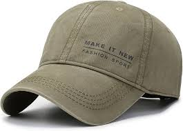
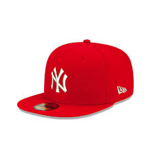

Gorra 1
Una gorra
200 pesos
Una gorra
200 pesos

Otra gorra
50 pesos

Y Otra Gorra
350 pesos
El perro no esta tan panzon
El gato si esta masomenos
zarigueya de excelente calidad
Este gato es un dormilón profesional, pero ronronea como un motor.
Mi perro panzón solo se levanta para comer y rodar por el suelo. 10/10.
Panza tierna, patas chuecas y una mirada que pide croquetas a cada rato.
La zarigueya más suavecita del vecindario, se hace la muerta cuando no le doy fruta.